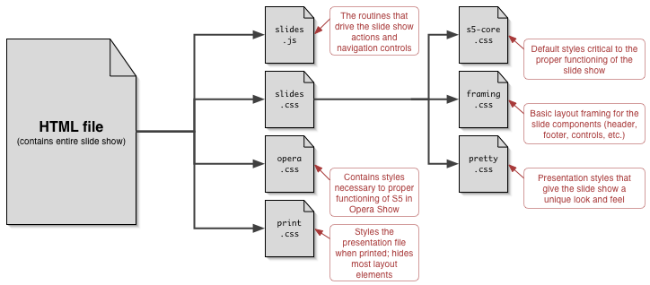
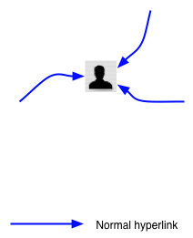
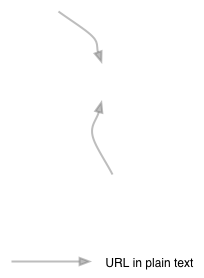
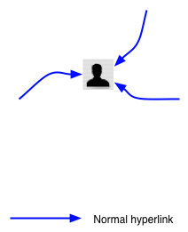
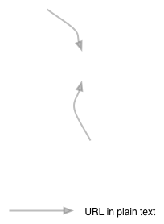

What is Perl?
- High-level, general-purpose programming language
- Perl borrows features from other programming languages including C, shell scripting (sh), AWK, and sed
- Perl is nicknamed "the Swiss Army chainsaw of programming languages" due to its flexibility and adaptability.
- Designed as a unix glue language, it is now everywhere
Origins
- High-level, general-purpose programming language originally developed by Larry Wall in 1987
- Larry continues to oversee the development of Perl. This Role is best conveyed by tese 2 Rules from the offical Documentation:
- Larry is always by definition right about how Perl should behave. This means he has final veto power on the core functionality.
- Larry is allowed to change his mind about any matter at a later date, regardless of whether he previously invoked Rule 1.
Why Perl?
- It's everywhere
- It's simple (enough)
- It makes easy things easy and hard things possible
- Roots in *nix
- Functional and Object Oriented
- Mature
Getting Perl
- For all operating Systems
Getting Perl
- For Windows
- The Win32 Perl Wiki has information about downloading, configuring, and compiling Perl on Windows. It is the best single resource for this topic. http://win32.perl.org/
- Strawberry Perl is a community-developed distribution of Perl. It includes all of the tools necessary to configure, build, and install additional Perl libraries from the CPAN. http://strawberryperl.com/
- ActivePerl is another binary distribution of Perl with Windows support. ActiveState offers commercial support for ActivePerl, along with its own repository of popular CPAN distributions. http://www.activestate.com/ActivePerl/
Getting Perl
- For Windows
- ActivePerl is another binary distribution of Perl with Windows support. ActiveState offers commercial support for ActivePerl, along with its own repository of popular CPAN distributions. http://www.activestate.com/ActivePerl/
- Cygwin comes with Perl http://www.cygwin.com/
- If you're running Cygwin, check out the puttycyg project. It runs Cygwin in a putty style terminal as opposed to a DOS cmd prompt http://code.google.com/p/puttycyg/
Getting Help
- Asking Questions the Smart Way
http://catb.org/~esr/faqs/smart-questions.html - Our mailing list, houston@pm.org
- PerlMonks http://perlmonks.org
- StackOverflow http://stackoverflow.com/questions/tagged/perl
- IRC http://www.irc.perl.org/channels.mhtml and http://pound.perl.org/
How It Works
- Controls are...
- Next slide: Space bar, return, right arrow, down arrow, page down, click anywhere in slide that isn't in the control area (lower right corner), click "arrow" in lower right corner, accesskey "X"
- Previous slide: Up arrow, left arrow, page up, click "arrow" in lower right corner, accesskey "Z"
- Toggle the slide styles: Click on the toggle button (to the left of the arrows), press "t", accesskey "T"
- To invoke the navigation menu: mouse into the lower right corner of the slide (below the navigation arrows)
The Advantages
- With one file, you get a slide show, a printable outline, and a screen presentation
- Files are incredibly lightweight and compress easily
- Thanks to being semantic XHTML, slideshow files are also highly accessible
- New slide themes can be created simply by writing new style sheets
- Unlike Opera Show, which has all of the above advantages, S5 works in multiple browsers
S5 Default File Structure

S5 Themes


 (just a sampling)
(just a sampling)
Features New to 1.1
- Incremental display of slide content
- Font scaling based on window size
- Support for PNG alpha channels in all supporting browsers, including IE/Win
- Ability to jump to any slide, or skip a number of slides, via keyboard commands
Incremental Animation
- A demonstration of just one of the many ways to accomplish simple animation-like effects (using a diagram from "XFN and...")

 




Current Limitations
- Only one author can be listed in the metadata
- Opera falls back to use OperaShow; thus no extras (like the navigation menu or progress indication) are available
- Images are not scaled along with the text when the window size changes
Open To The Public
- S5 1.1 is released under an explicit Public Domain license
- Contributors to S5 must be willing to accept those terms
- In other words: if you submit a contribution, you are agreeing to abide by and place your contributions into the Public Domain along with S5
- On the other hand, anyone can freely use S5 for their own presentations or modify S5 to suit their needs
In Summary
while (<>) {
chomp;
print join("\t", (split /:/)[0, 2, 1, 5] ), "\n";
}
- With minimal scripting, we have recreated and improved upon a (currently) browser-specific technology, making it cross-browser in the process
- New themes are just a matter of writing a new style sheet